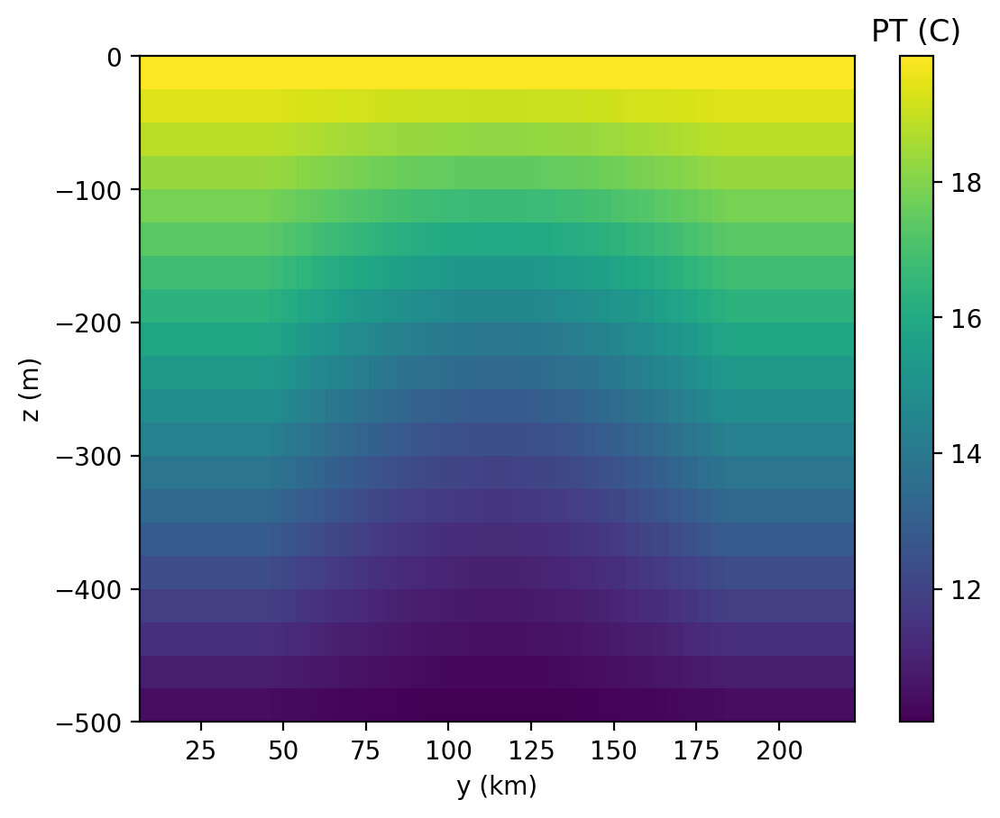

internal_wave
The ocean/internal_wave test group induces internal wave propagation and is documented in
Ilicak et al. (2012).
The domain is periodic on the zonal boundaries and solid on the meridional boundaries. Salinity is constant throughout the domain (at 35 PSU). The initial temperature has a linear background stratification with a sinusoidal perturbation in the center of the domain. This perturbation initiates symmetric waves that propage out from the center and then back to the center after meeting the solid boundaries. with a gradient between the two halves that is sinusoidally perturbed in the meridional direction. The surface temperature is also warmer than at depth.
{kind=link}
By default, the 20 vertical layers each have 25-m uniform thickness. By default, all cases have a horizontal resolution of 5 km.
The test group includes 3 test cases. All test cases have 2 steps,
initial_state, which defines the mesh and initial conditions for the model,
and forward (given another name in many test cases to distinguish multiple
forward runs), which performs time integration of the model. There is an optional viz
step which performs visualization of vertical cross-sections through the center of the domain.
config options
All 3 test cases share the same set of config options:
# Options related to the vertical grid
[vertical_grid]
# the type of vertical grid
grid_type = uniform
# Number of vertical levels
vert_levels = 20
# Depth of the bottom of the ocean
bottom_depth = 1000.0
# The type of vertical coordinate (e.g. z-level, z-star)
coord_type = z-level
# Whether to use "partial" or "full", or "None" to not alter the topography
partial_cell_type = None
# The minimum fraction of a layer for partial cells
min_pc_fraction = 0.1
# namelist options for internal wave testcases
[internal_wave]
# the number of grid cells in x and y
nx = 4
ny = 50
# the size of grid cells (m)
dc = 5000.0
# Viscosity values to test for rpe test case
viscosities = 0.01, 1, 15, 150
# Logical flag that determines if locations of features are defined by distance
# or fractions. False means fractions.
use_distances = False
# Temperature of the surface in the northern half of the domain.
surface_temperature = 20.1
# Temperature of the bottom in the northern half of the domain.
bottom_temperature = 10.1
# Difference in the temperature field between top and bottom
temperature_difference = 2.0
# Fraction of domain in Y direction the temperature gradient should be linear
# over.
amplitude_width_frac = 0.33
# Width of the temperature gradient around the center sin wave. Default value
# is relative to a 500km domain in Y.
amplitude_width_dist = 50e3
# Salinity of the water in the entire domain.
salinity = 35.0
# Logical flag that determines if locations of features are defined by distance
# or fractions. False means fractions.
use_distances = False
# Temperature of the surface in the northern half of the domain.
surface_temperature = 13.1
# Temperature of the bottom in the northern half of the domain.
bottom_temperature = 10.1
# Difference in the temperature field between the northern and southern halves
# of the domain.
temperature_difference = 1.2
# Fraction of domain in Y direction the temperature gradient should be linear
# over.
gradient_width_frac = 0.08
# Width of the temperature gradient around the center sin wave. Default value
# is relative to a 500km domain in Y.
gradient_width_dist = 40e3
# Salinity of the water in the entire domain.
salinity = 35.0
# Coriolis parameter for entire domain.
coriolis_parameter = -1.2e-4
All units are mks, with temperature in degrees Celsius and salinity in PSU.
default
ocean/internal_wave/default is the default version of the
internal wave test case for a short (15 min) test run and validation of
prognostic variables for regression testing.
There is also a variant for testing vertical Lagrangian remap capabilities at
ocean/internal_wave/vlr/default.
rpe_test
Since mixing is a strong function of horizontal viscosity, this test case performs
20-day integrations of the model forward in time at 5 different values of the viscosity (with steps
named rpe_test_1_nu_1, rpe_test_2_nu_5, etc.)
ocean/internal_wave/rpe_test,
Results of these tests have been used
to show that MPAS-Ocean has lower spurious dissipation of reference potential
energy (RPE) than POP, MOM and MITgcm models
(Petersen et al. 2015).
There is also a variant for testing vertical Lagrangian remap capabilities at
ocean/internal_wave/vlr/rpe_test. The result of this test should show less
RPE for all viscosity values at every time horizon compared with the flux-form
vertical advection method.
ten_day_test
This test is identical to ocean/internal_wave/default except that the duration is 10 days.